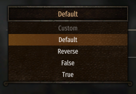
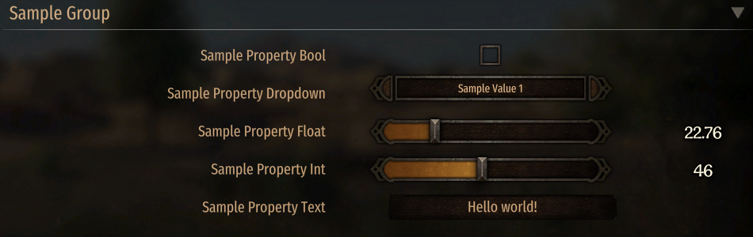

Overview
MCMv4 consists of two libraries:
- MCMv4 - Core. Includes v1/v2 Attribute API and a Fluent Builder API that allows to define settings at runtime. Includes a basic implementation of all abstract interfaces.
- MCMv4.UI - GauntletUI implementations.
MCMv4 also provides compatibility layers for other API's (Modules):
- MCM.Adapter.MBO - MBOv1/MCMv2.
- MCM.Adapter.MCMv3 - MCMv3.
- MCM.Adapter.ModLib - ModLib, pre 1.3 and post 1.3.
The compatibility layers replace the original libraries to ensure maximum compatibility with MCM.
Supported API
MCMv4 support 6 API sets:
- MCMv4 - main API.
- MBOv1 - MBOptionScreen v1.1.15 (Requires MCM.Adapter.MBO)
- MBOv2/MCMv2 - v2.0.10 (Requires MCM.Adapter.MBO)
- MCMv3 - v3.1.9 (Requires MCM.Adapter.MCMv3)
- ModLibV1 - v1.0.0-v1.0.2 (Requires MCM.Adapter.ModLib)
- ModLibV13 - v1.3.0-v1.4.0 (Requires MCM.Adapter.ModLib)
Using with your mods
You have two options as to how to use MCMv4:
- Include MCMv4 into your mod
/binfolder by using NuGet packet Bannerlord.MCM. Also, add a SubModule entry inSubModules.xml. - Directly depend on the NexusMods Standalone mod and use NuGet packet Bannerlord.MCM. Don't include anything in your
/binfolder from MCM.
By including MCMv4 you will be able to save/load settings programmatically, without having the UI Options screen when the Standalone module is not installed.
...
<SubModules>
<SubModule>
<Name value="MCMv4" />
<DLLName value="MCMv4.dll" />
<SubModuleClassType value="MCM.MCMSubModule" />
<Tags />
</SubModule>
<SubModule>
<Name value="MCMv4 Basic Implementation" />
<DLLName value="MCMv4.dll" />
<SubModuleClassType value="MCM.Implementation.MCMImplementationSubModule" />
<Tags />
</SubModule>
</SubModules>
...
By depending on the standalone module the experience is basically the same as with ModLib. The Nexus standalone module will ensure that your settings are displayed correctly. You also need to add Bannerlord.MBOptionScreen as a dependency to your SubModules.xml!
...
<DependedModules>
<DependedModule Id="Bannerlord.MBOptionScreen"/>
</DependedModules>
...
Types of settings
As of now, Mod Option libraries provided Global options that are shared across different games/saves.
MCMv4 introduces a second type of settings - PerSave. They are stored in the save file itself. When MCM is removed, the save file will still be playable. Basically, they do not brick the saves. Be aware that saving even once without MCM will wipe all settings from the save file permanently.
Included Settings Formats and implementing your own
Warning
In MCMv4, the default settings provider is none, this means that your settings won't be saved to disk unless you override Settings.FormatType!
MCMv4 provides json (json and json2 internally) and xml file formats.
You can define your own file formats and take full control of how the settings are saved/loaded by implementing the interface ISettingsFormat.
internal class YamlSettingsFormat : ISettingsFormat
{
...
public IEnumerable<string> FormatTypes { get; } = new [] { "your_prefix_yaml", "your_prefix_yml" };
...
}
You also need to register the new interface:
// In your MBSubModuleBase override
protected override void OnSubModuleLoad()
{
base.OnSubModuleLoad();
if (this.GetServiceContainer() is not null services)
{
services.AddSettingsFormat<YamlSettingsFormat>();
}
}
Usage:
public abstract class YamlSettings : GlobalSettings<YamlSettings>
{
public override string FormatType { get; } = "your_prefix_yaml";
}
Presets
The setting support custom presets!

Attribute API
The Attribute API based settings will provide a 'Default' preset that can be used to revert the options to their default values.
To override the 'Default' preset or add your custom presets, override GetAvailablePresets(), here's an example.
public override IDictionary<string, Func<BaseSettings>> GetAvailablePresets()
{
var basePresets = base.GetAvailablePresets(); // include the 'Default' preset that MCM provides
basePresets.Add("Reverse", () => new CustomSettings()
{
Property1 = false,
Property2 = true
});
basePresets.Add("False", () => new CustomSettings()
{
Property1 = false,
Property2 = false
});
basePresets.Add("True", () => new CustomSettings()
{
Property1 = true,
Property2 = true
});
return basePresets;
}
Fluent API
var builder = BaseSettingsBuilder.Create("Testing_v1", "Testing Fluent API Presets")!
...
.CreatePreset("Test", presetBuilder => presetBuilder
.SetPropertyValue("prop_1", true)
.SetPropertyValue("prop_2", 2)
.SetPropertyValue("prop_3", 1.5F)
.SetPropertyValue("prop_4", "HueHueHue"));
Localization
Attribute API
Both property Name and HintText support game's localization system, this means that you can use such code
[SettingPropertyBool("{=DvfsSDF}Property Sample", HintText = "{=DnfhFD}Sample Hint Text.")]
[SettingPropertyGroup("{=JFgbsdg}Group Sample")]
You also can use the localization system for nested groups!
[SettingPropertyGroup("{=JFgbsdg}Group Sample\{=GDgsdfj}Nested Group Sample")]
INotifyPropertyChanged
The settings implement the INotifyPropertyChanged interface.
MCM subscribes to it and will refresh the UI if any value has changed.
MCM will also trigger PropertyChanged event when the setting are saved by providing BaseSettings.SaveTriggered constant with value SAVE_TRIGGERED.
IRef
IRef is an interface that acts as a link to the actual values that classes like Fluent Builder uses.
MCMv4 has several implementations:
- PropertyRef - links to an actual property (
PropertyRef(PropertyInfo propInfo, object instance)). - ProxyRef<T> - links to get/set actions (
ProxyRef(Func<T> getter, Action<T>? setter)) that will set/return whatever you want. - StorageRef - holds a value within itself.
Defining Settings

Example of Settings definition
Warning
In MCMv4, the default settings provider is none, this means that your settings won't be saved to disk unless you override Settings.FormatType!
Attribute API
internal sealed class MCMUISettings : AttributeGlobalSettings<MCMUISettings> // AttributePerSaveSettings<MCMUISettings>
{
private bool _useStandardOptionScreen = false;
public override string Id => "MCMUI_v3";
public override string DisplayName => $"MCM UI Impl. {typeof(MCMUISettings).Assembly.GetName().Version.ToString(3)}";
public override string FolderName => "MCM";
public override string FormatType => "json2";
[SettingPropertyBool("Use Standard Option Screen", Order = 1, RequireRestart = false, HintText = "Use standard Options screen instead of using an external.")]
[SettingPropertyGroup("General")]
public bool UseStandardOptionScreen
{
get => _useStandardOptionScreen;
set
{
if (_useStandardOptionScreen != value)
{
_useStandardOptionScreen = value;
OnPropertyChanged();
}
}
}
}
Fluent API
bool _boolValue = false;
int _intValue = 1;
float _floatValue = 0f;
string _stringValue = "";
var builder = BaseSettingsBuilder.Create("Testing_Global_v4", "MCMv4 Testing Fluent Settings")!
.SetFormat("xml")
.SetFolderName(string.Empty)
.SetSubFolder(string.Empty)
.CreateGroup("Testing 1", groupBuilder => groupBuilder
.AddBool("prop_1", "Check Box", new ProxyRef<bool>(() => _boolValue, o => _boolValue = o), boolBuilder => boolBuilder
.SetHintText("Test")
.SetRequireRestart(false)))
.CreateGroup("Testing 2", groupBuilder => groupBuilder
.AddInteger("prop_2", "Integer", 0, 10, new ProxyRef<int>(() => _intValue, o => _intValue = o), integerBuilder => integerBuilder
.SetHintText("Testing"))
.AddFloatingInteger("prop_3", "Floating Integer", 0, 10, new ProxyRef<float>(() => _floatValue, o => _floatValue = o), floatingBuilder => floatingBuilder
.SetRequireRestart(true)
.SetHintText("Test")))
.CreateGroup("Testing 3", groupBuilder => groupBuilder
.AddText("prop_4", "Test", new ProxyRef<string>(() => _stringValue, o => _stringValue = o), null))
.CreatePreset("Test", presetBuilder => presetBuilder
.SetPropertyValue("prop_1", true)
.SetPropertyValue("prop_2", 2)
.SetPropertyValue("prop_3", 1.5F)
.SetPropertyValue("prop_4", "HueHueHue"));
var globalSettings = builder.BuildAsGlobal();
globalSettings.Register();
globalSettings.Unregister();
var perSaveSettings = builder.BuildAsPerSave();
perSaveSettings.Register();
perSaveSettings.Unregister();
Translating MCM
Just create a module and include in the module folder root folders ModuleData/Languages and include the translations of the following files:
The game will load them automatically!
Migrating from v3
- Check this page!
Notes
- Settings.Instance is available after
OnSubModuleLoad, so the earliest you can use it is insideOnBeforeInitialModuleScreenSetAsRoot